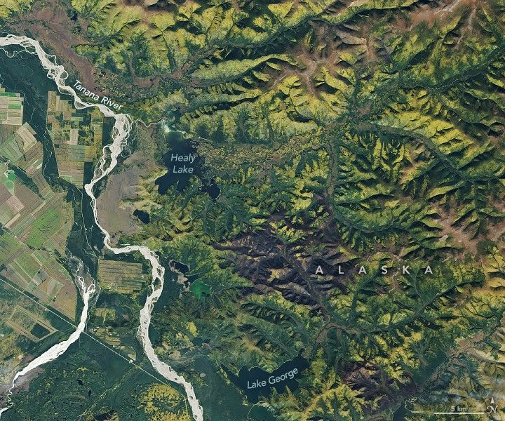

A Golden Moment for Boreal Forests
The 2025 autumnal equinox arrived on September 22, marking the start of astronomical fall in the Northern Hemisphere. At high latitudes, however, the signs of seasonal change were already evident.
On September 18, the OLI (Operational Land Imager) on Landsat 8 captured yellow-tinged hills above the Tanana River near Delta Junction, Alaska. In this subarctic region of Interior Alaska, fall conditions are brief, nestled between short, mild summers and long, frigid winters.
During summer months, plant life thrives under nearly continuous daylight. Hillsides are covered by scrubs and stunted trees such as black spruce, American dwarf birch, and quaking aspen, while low-lying areas support sedges, mosses, and shrubs like lingonberry and bog blueberry. Farmers utilize the short growing season to cultivate cereal grains, forage grasses, legumes, and hardy vegetables.
Summer wildfires also leave a lasting imprint on the landscape. Dark brown burned areas visible southeast of Healy Lake are likely from the Twelvemile Lake and Sand Lake fires, which swept through black spruce and brush earlier in the summer. Black spruce, an evergreen species, is particularly fire-prone.
The brilliant colors of autumn emerge as air temperatures drop and declining daylight halts chlorophyll production. With the green pigment fading, yellow and red pigments become visible. By the equinox, fall color was well underway in the far north and will gradually progress southward, peaking in mid-November in temperate regions.
Astronomically, the September equinox occurs when the Sun crosses the plane of Earth’s equator. Observers at the equator saw the Sun directly overhead at noon on September 22. From that point, the Sun’s apparent path shifts progressively southward until the December solstice, after which it begins moving northward again.